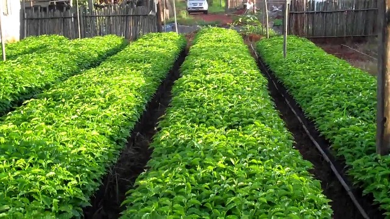

Projects->Nursery Bed Operation
Tree Nurseries for Environmental Conservation and Sustainable Livelihoods
At Environmental and Nature Conservation Uganda (ENCO Uganda), we actively contribute to environmental conservation through the establishment and operation of tree nurseries. These nurseries serve as a critical resource for raising a wide range of tree species, both indigenous and exotic.
- Indigenous Tree Species
We prioritize the cultivation of indigenous tree species due to their remarkable ability to conserve the environment. These species play a key role in improving soil fertility, stabilizing rainfall patterns, and modifying the local climate. By promoting the planting of indigenous trees, we aim to restore degraded areas and enhance biodiversity. Indigenous species are distributed free of charge to community members, schools, and public institutions for environmental conservation purposes. - Exotic Tree Species
Exotic tree species, on the other hand, are grown primarily for commercial purposes. These species are fast-growing, making them an ideal choice for timber production and other commercial uses. By promoting exotic species for commercial planting, we help reduce the pressure on natural forests, allowing them to regenerate and continue serving as critical habitats for wildlife. - Supporting Community and Sustainability
Our tree nurseries not only support conservation efforts but also contribute to the organization's sustainability. While we provide indigenous trees to communities and institutions for free, we also sell high-quality seedlings to those looking to invest in the right tree species for commercial or personal purposes. This allows us to generate income to sustain our operations while continuing to support community conservation projects. - Training and Capacity Building
In addition to providing seedlings, ENCO Uganda offers training and support to community members on tree nursery establishment, tree planting, and maintenance. By empowering local people with the skills they need, we ensure long-term success in afforestation and reforestation efforts.
